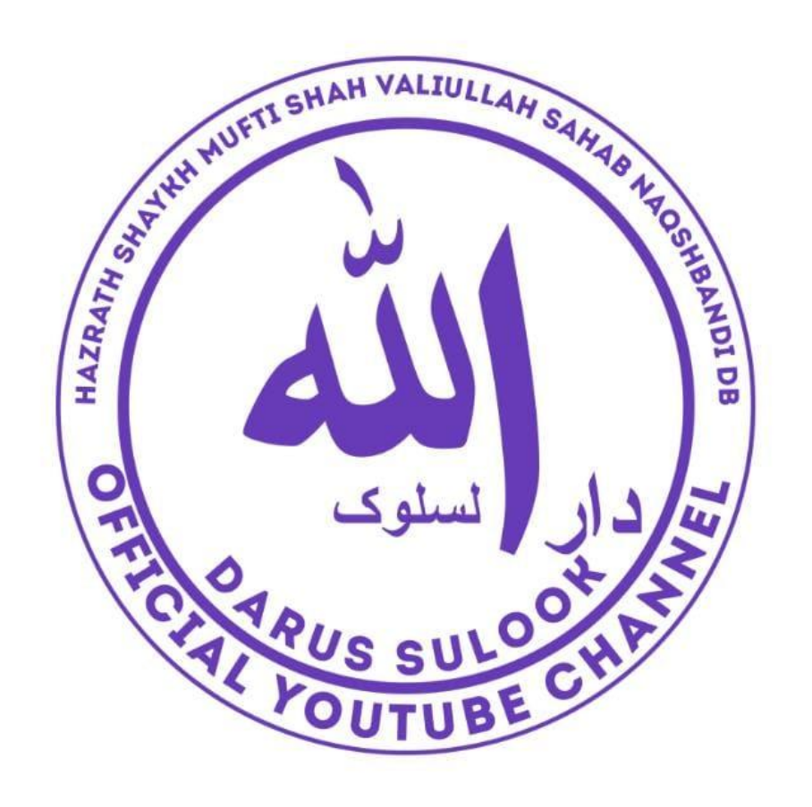

Darussulok

✨MAHANA ISLAAHI MAJLIS BANGALORE✨
A "Darusuluk Islahi wa Tarbiyat Majlis" is an Islamic gathering focused on
spiritual reform (Islah) and upbringing/training (Tarbiyat).
These gatherings are often held in homes, masjids, or institutions
dedicated to nurturing spiritual growth and moral values.
Darusuluk provides an environment for learning, reflection, Zikr, and connecting
with righteous scholars for guidance and spiritual elevation.
🌿Core Naqshbandi Wazaaif (Spiritual Practices)
The following wazaaif are practiced by murideen (disciples) under a Naqshbandi Shaykh in the Hanafi–Deobandi tradition:
1.Dhikr-e-Qalbi (Silent Heart Dhikr)
- Constant remembrance of "Allah" in the heart without moving the tongue.
- Practiced throughout the day, even while doing daily work.
- It’s a hallmark of the Naqshbandi path.
2.Kalimah Tayyibah (لا إله إلا الله Ù…Øمد رسول الله)
- Repeating the Shahadah with full concentration on the heart.
- Often done silently with deep reflection.
3.Isighfaar (استغفر الله)
- Seeking forgiveness from Allah.
4.Durood Sharif (Salawat on Prophet ﷺ)
- Sending blessings upon the Prophet Muhammad (ﷺ).
5.Muraqabah (Spiritual Meditation)
- Sitting quietly, closing eyes, and focusing on the heart with presence of Allah.
- Visualizing that Allah’s mercy is descending upon your heart.
- Can be done 5-15 minutes daily or as guided by the Shaykh.
6. Rabt (Connection with Shaykh)
- Spiritually linking one’s heart with the Shaykh (Murshid) to receive fuyoodh (blessings).
- Practiced while doing dhikr, muraqabah.